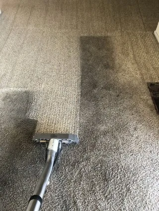

تبدأ تنظف البيت بحماس، وبعد ساعتين تلقى نفسك تنقل بين المطبخ والصالة والحمام، وكل مكان خلصته نص خلصة. وبعد ما تقعد ترتاح، تنتبه إن فوق الدولاب ما انمسح، وإن ورا الثلاجة ما أحد قربه. هنا تفرق قائمة تنظيف المنزل الشامل بالرياض: ورقة واضحة تمشي عليها بندًا بندًا، فما تنسى شي، وما تعيد نفس المكان مرتين.
محتويات المقال 38 قسم
- قائمة تنظيف المنزل الشامل بالرياض: ليش غرفة غرفة؟
- قبل ما تبدأ: القاعدة العامة
- المطبخ
- دورات المياه
- تنظيف المنزل غرفة غرفة بالرياض: غرف النوم
- المجلس والصالة
- المداخل والممرات والسلالم والشرفات
- الأماكن المنسية
- قائمة مهام تنظيف المنزل العميق بالرياض: وش تضيف على التنظيف العادي؟
- غرف إضافية ما تنسى تحطها في القائمة
- ترتيب مقترح على يوم أو يومين
- متى تكون الاستعانة بفريق أوفر لوقتك؟
- كيف تراجع شغل الفريق بالقائمة؟
- عادات يومية وأسبوعية تخفف القائمة الكبيرة
- القائمة قبل رمضان والعيد
- القائمة بعد السفر الطويل
- القائمة عند الانتقال لبيت جديد أو تسليم بيت
- البيوت اللي فيها أطفال وحيوانات أليفة
- غبار الرياض وتأثيره على القائمة
- كيف تقسم القائمة بين أهل البيت
- المواد المناسبة لكل سطح
- أخطاء شائعة لما تطبق القائمة
- نسخة الشقة الصغيرة من القائمة
- نسخة الفلة والدورين
- جدول موسمي للقائمة على مدار السنة
- كيف تعدل القائمة على بيتك
- لما يكون عندك ضيوف بعد ساعات
- التنظيف بعد الترميم أو الصبغ
- علامات إن بيتك يحتاج القائمة العميقة
- وش تجهز قبل ما يوصل الفريق
- متى تنظف في صيف الرياض؟
- أول أسبوع بعد التنظيف الشامل
- لو عندك ساعتين بس
- بعد ما تخلص: الأدوات نفسها تحتاج تنظيف
- نصيحة من فريق نقاء
- خلاصة سريعة
- أسئلة شائعة عن قائمة تنظيف المنزل
- الخاتمة
في هالدليل نعطيك قائمة مرتبة لكل جزء في البيت: المطبخ، ودورات المياه، وغرف النوم، والمجلس والصالة، والمداخل والممرات، والأماكن اللي ينساها أغلب الناس. وكل غرفة مكتوبة كنقاط قصيرة من الأعلى للأسفل، عشان تقدر تطبقها بنفسك، أو تستخدمها تراجع فيها شغل أي فريق بعد ما يخلص. وفكرة تنظيف المنزل غرفة غرفة بالرياض إنك تقفل كل غرفة قبل ما تنتقل للي بعدها.
💡 القائمة عامة وتصلح لأغلب البيوت والشقق في الرياض. احذف اللي ما ينطبق على بيتك، وأضف أماكن خاصة فيك. وقبل ما تستخدم أي مادة تنظيف على سطح حساس مثل الرخام أو الخشب أو الأقمشة، جربها في مكان صغير ما يبان، واقرأ تعليمات المادة.
قائمة تنظيف المنزل الشامل بالرياض: ليش غرفة غرفة؟
لما تنظف بدون ترتيب، تصير تتنقل حسب اللي تشوفه قدامك. تمسح طاولة في الصالة، وبعدين تتذكر المغسلة، وبعدين ترجع للصالة لأنك نسيت الأرفف. وهالتنقل يضيع وقت، ويخلي الغبار اللي نزل من مكان ينتقل لمكان نظفته قبل شوي.
أما لما تقسم البيت غرفًا، وتمشي في كل غرفة على نفس الترتيب، فتعرف وين وصلت، ووش باقي. وكل غرفة تخلص منها تقفلها في بالك وما ترجع لها. وهذا اللي يخلي قائمة تنظيف المنزل الشامل بالرياض تنفعك وأنت في نص الشغل، لأنك ترجع لها كل ما خلصت غرفة.
والقائمة تفيد حتى لو ما نظفت بنفسك. لو جاك فريق تنظيف، تقدر تمشي معه في آخر الزيارة وتشيك على البنود المهمة لك، بدل ما تكتفي بنظرة عامة.
قبل ما تبدأ: القاعدة العامة
فيه قواعد بسيطة تنطبق على كل غرفة، ولو مشيت عليها توفر نص التعب:
- من الأعلى للأسفل: السقف والمراوح والأرفف العالية أول، والأرضية آخر شي
- من الداخل للخارج: ابدأ من أبعد زاوية في الغرفة واطلع باتجاه الباب
- الناشف قبل المبلول: شيل الغبار بالمكنسة أو الممسحة الناشفة قبل ما تستخدم الموية
- غرفة وحدة في كل مرة: لا تفتح غرفة جديدة قبل ما تخلص اللي أنت فيها
- هوّ المكان: افتح النوافذ أو شغل الشفاط، خصوصًا مع المنظفات القوية
- لا تخلط مواد التنظيف مع بعض، خصوصًا الكلور مع أي منظف ثاني
الأدوات والمواد اللي تحتاجها
- مكنسة كهربائية فيها رؤوس للزوايا والكنب
- ممسحة أرضيات ودلو، أو ممسحة بخار لو عندك
- فوط مايكروفايبر بألوان مختلفة: لون للمطبخ، ولون للحمامات، ولون للغرف
- فرشاة صغيرة للفواصل وزوايا الحنفيات
- منظف متعدد الاستخدامات، ومزيل دهون للمطبخ، ومنظف للحمامات، ومنظف زجاج
- سلم صغير آمن للأماكن العالية
- قفازات، وكيس كبير للمخلفات
وجهز الأدوات كلها في سلة أو دلو تشيله معك من غرفة لغرفة، بدل ما تروح وترجع كل شوي تدور على شي.
المطبخ
المطبخ أثقل مكان في البيت، لأن فيه دهون وأكل ورطوبة مع بعض. ابدأ فيه وأنت نشيط، ولا تخليه آخر شي.
الأسطح والجدران
- أعلى الخزائن العلوية من فوق، لأنها تجمع غبار ودهون
- واجهات الخزائن العلوية والسفلية والمقابض
- الجدار ورا الموقد وحول المغسلة
- الرخامة أو الكاونتر، بعد ما تشيل كل شي من فوقها
- مفاتيح الكهرباء والأفياش حول المطبخ
الفرن والموقد
- الشبكات ورؤوس الشعلات: انقعها في موية دافية ومزيل دهون
- سطح الموقد وحواف الشعلات
- الفرن من الداخل: الأرفف، والجدران، والزجاج
- باب الفرن من برا والمقابض
- الأرضية والجوانب حول الفرن لو تقدر تحركه بأمان
الثلاجة من الداخل والخارج
- فضّ الثلاجة وتخلص من الأكل المنتهي
- الأرفف والأدراج: طلعها واغسلها
- الجدران الداخلية ومطاط الباب
- الباب من برا والمقبض وأعلى الثلاجة
- ورا الثلاجة وتحتها لو تقدر تسحبها بأمان
الشفاط
- فلتر الشفاط: فكه وانقعه في موية حارة ومزيل دهون
- جسم الشفاط من برا ومن تحت
- اللمبة وغطاها
الأدراج والخزائن
- فضّ درج درج وامسحه من الداخل
- تخلص من الأغراض المكسورة والمنتهية
- رف التوابل والمعلبات
- رجّع الأغراض مرتبة
الحوض
- المغسلة والحنفية وقاعدتها
- المصفاة والمصرف
- تحت المغسلة: الخزانة والمواسير الظاهرة
- غسالة الصحون: الفلتر والحواف والمطاط
الأرضية
- اكنس الزوايا وتحت الخزائن
- امسح الأرضية من أبعد نقطة باتجاه الباب
- الوزرات أو النعلات حول المطبخ
دورات المياه
الحمامات تحتاج مواد مختلفة عن باقي البيت، وأدوات خاصة فيها. لا تستخدم فوطة الحمام في أي مكان ثاني.
الأسطح والبلاط والفواصل
- فتحة الشفاط والسقف حولها
- البلاط من فوق لتحت، خصوصًا حول الدش
- الفواصل بين البلاط بالفرشاة
- الرفوف وأماكن الصابون والشامبو
المرحاض
- من الداخل بالفرشاة والمنظف المناسب
- الغطاء والمقعد من الجهتين
- القاعدة والأرضية حولها
- خزان السيفون من برا وزر التشغيل
- الشطاف ورأسه
الدش والحوض
- رأس الدش: فكه وشيل الترسبات من فتحاته
- الحنفيات وقواعدها
- البانيو أو أرضية الدش
- المغسلة وتحتها
الزجاج والمرايا
- زجاج كابينة الدش من الداخل والخارج
- المرايا بمنظف الزجاج وفوطة ناشفة
- إطارات المرايا والرفوف حولها
المصارف
- شيل الشعر والأوساخ من مصفاة الدش
- مصرف الأرضية
- صب موية حارة في المصارف بعد التنظيف
الأرضية
- الزوايا ورا المرحاض
- الأرضية كاملة، وآخر شي عتبة الباب
- الباب من الداخل والخارج والمقبض
والمطبخ ودورات المياه هم أكثر جزئين في قائمة مهام تنظيف المنزل العميق بالرياض، لأن الترسبات والدهون فيهم تحتاج وقت تشتغل فيه المادة قبل المسح.
محتاج تنظيف احترافي؟
ما عندك وقت تمشي على القائمة بنفسك؟ فريقنا ينفذها كاملة عنك، غرفة غرفة، وتراجعها معه بندًا بندًا قبل ما يطلع
تنظيف المنزل غرفة غرفة بالرياض: غرف النوم
غرف النوم أخف من المطبخ والحمام، لكن فيها غبار كثير في الأماكن العالية وتحت السرير. وفي تنظيف المنزل غرفة غرفة بالرياض، غرفة النوم تجي بعد الأماكن الثقيلة، عشان تخلص يومك بشغل أخف.
الغبار من الأعلى
- شفرات المروحة والثريا أو اللمبات
- أعلى الدولاب والرفوف العالية
- الستائر: نفضها أو اشفطها، وانزلها للغسيل لو تحتاج
- قضبان الستائر وإطارات النوافذ
- الأباجورات وأغطية اللمبات
الأسرّة والمراتب
- شيل المفارش وغيرها
- اشفط المرتبة من الجهتين لو تقدر تقلبها
- تحت السرير: اكنس واشفط كل الزوايا
- قاعدة السرير وظهره
- المخدات: اغسلها حسب تعليمات القماش
الخزائن
- رفوف الدولاب: فضها وامسحها
- أبواب الدولاب ومرايته
- أدراج الكومدينة والتسريحة
- تخلص من الملابس اللي ما تلبسها
الأرضيات والسجاد
- اشفط السجاد من الجهتين لو كان صغير
- الموكيت: اشفطه في اتجاهين متعاكسين
- البلاط أو الباركيه: امسحه بالمادة المناسبة
- الأرضية عند رجول السرير والكومدينات

المجلس والصالة
المجلس والصالة فيهم أثاث كثير وأقمشة تمسك الغبار. ولو كان المجلس يستقبل ضيوف كثير، فهو يحتاج تركيز أكثر من الصالة العائلية.
الكنب والمفروشات
- شيل المخدات واشفط تحتها وبين الفواصل
- اشفط الكنب كامل من فوق ومن الجوانب
- عالج البقع الظاهرة بالمادة المناسبة للقماش
- تحت الكنب وورا ظهره
- الطاولات الجانبية والتحف
الستائر
- طيات الستائر الثقيلة اللي يتجمع فيها الغبار
- البطانة الداخلية للستارة
- الحبال والمسكات
الإضاءة والمكيفات
- الثريات: قطعة قطعة بفوطة ناشفة، والكهرباء مفصولة
- اللمبات الجدارية والسبوتات
- فتحات المكيف المركزي أو السبليت من برا
- فلاتر المكيفات المنزلية حسب تعليمات الشركة المصنعة
الأرضيات
- السجاد الكبير: اشفطه من الجهتين
- الرخام: امسحه بمادة مناسبة له بدون أحماض
- الزوايا وتحت الأثاث الثقيل
الزجاج
- النوافذ من الداخل
- مجاري النوافذ اللي يتجمع فيها الغبار
- الطاولات الزجاجية والأبواب الزجاجية
المداخل والممرات والسلالم والشرفات
المداخل والممرات أول شي يشوفه الضيف، وأكثر مكان يدخل منه غبار الشارع.
- باب المدخل من الداخل والخارج والجرس
- دواسة المدخل: انفضها أو اغسلها
- رف الأحذية: فضّه وامسحه
- الممرات: اللوحات والأرفف الجدارية
- الدرج: من الأعلى للأسفل، كل درجة وحوافها
- الدرابزين والمقبض بالذات
- الشرفة: الأرضية والسور والكراسي، وشيل الأوراق والتراب
- زجاج باب الشرفة من الجهتين
الأماكن المنسية
هذي الأماكن ينساها أغلب الناس، حتى في التنظيف الشامل. ولو تركتها، يبان البيت نظيف من بعيد، لكن أي أحد يمرر يده على قائمة باب أو فيش بيلقى الغبار:
- خلف التلفزيون والراوتر والأسلاك
- فتحات التكييف في الممرات وعلى الدرج
- مفاتيح الكهرباء والأفياش في غرف النوم والمجلس
- زوايا الأسقف وشباك العنكبوت
- قوائم الأبواب وأعلاها
- مقابض النوافذ وأقفالها
- تحت الدواليب الثقيلة وخلفها
- الريموتات والأجهزة اللي تلمسها الأيدي كثير
- سلة المهملات من الداخل
- مجاري الأبواب المنزلقة والدواليب
ولو كنت تطبق قائمة تنظيف المنزل الشامل بالرياض لأول مرة، ابدأ بهالأماكن، لأنها غالبًا ما انمسحت من فترة طويلة.
قائمة مهام تنظيف المنزل العميق بالرياض: وش تضيف على التنظيف العادي؟
التنظيف العادي يحافظ على البيت، والعميق يرجعه لحالة قريبة من الجديد. ولو كنت ناوي تسوي تنظيف عميق، فهذي البنود اللي تضيفها فوق القوائم اللي فوق:
- الفرن والثلاجة من الداخل بالكامل
- الشفاط وفلتره
- داخل كل الخزائن والأدراج
- الجدران والأبواب كاملة
- النوافذ من الداخل والخارج ومجاريها
- غسيل الكنب والسجاد بالمكاين
- الفواصل بين البلاط في الحمامات والمطبخ
- ورا الأجهزة وتحت الأثاث الثقيل
- المراتب بالشفط أو الغسيل
وغالبًا تحتاج قائمة مهام تنظيف المنزل العميق بالرياض مرتين إلى أربع مرات في السنة، والباقي يكفيه تنظيف عادي حسب استخدام البيت.
غرف إضافية ما تنسى تحطها في القائمة
أغلب القوائم الجاهزة تتكلم عن المطبخ والحمامات والغرف، وتنسى الأماكن اللي تختلف من بيت لبيت. وفي بيوت الرياض بالذات، فيه غرف ومساحات لازم تكون جزء من قائمة تنظيف المنزل الشامل بالرياض، وإلا بتبقى منسية لين تلاحظها صدفة.
غرفة الأطفال
غرفة الأطفال لها ترتيب مختلف شوي، لأن فيها ألعاب وبقع وأشياء صغيرة تحت الأثاث. وفي تنظيف المنزل غرفة غرفة بالرياض، خلها بعد غرف النوم الثانية، عشان تاخذ وقتها بدون استعجال.
- اجمع الألعاب في صندوق قبل ما تبدأ
- امسح الألعاب البلاستيك اللي يحطها الطفل في فمه بمادة مناسبة وآمنة
- الجدران: آثار الأيدي والألوان
- مكتب الدراسة والكرسي
- الألعاب الصغيرة اللي تدحرجت تحت الأثاث
- السجاد اللي يلعب عليه الطفل: اشفطه كويس
- هوّ الغرفة زين بعد التنظيف قبل ما يرجع الطفل لها
غرفة الغسيل
غرفة الغسيل نفسها تحتاج تنظيف، مع إنها المكان اللي تنظف فيه الملابس. والرطوبة والوبر يتجمعون فيها بسرعة.
- فلتر النشافة: شيل الوبر منه
- درج المنظف في الغسالة
- مطاط باب الغسالة الأمامية: امسحه ونشفه
- أعلى الغسالة والنشافة وورا الأجهزة
- الرفوف وعلب المنظفات
- الأرضية والمصرف لو فيه
وفي تنظيف المنزل غرفة غرفة بالرياض، غرفة الغسيل تجي بعد المطبخ عادة، لأنها تحتاج نفس النوع من المواد.
المكتب المنزلي
- الشاشة بفوطة ناعمة وناشفة، والجهاز مطفي
- الكيبورد والماوس
- الأسلاك وتحت المكتب
- الأرفف والكتب: نفضها من الغبار
- الكرسي: قماشه أو جلده والعجلات
غرفة الطعام
- الطاولة من فوق وتحت والكراسي
- قماش الكراسي: اشفطه وعالج البقع
- البوفيه والفترينة من الداخل والزجاج
- مفرش الطاولة وحامل المناديل
- الأرضية تحت الطاولة بالذات
وغرفة الطعام تتسخ بسرعة بعد العزايم، فلو كان عندك مناسبة قريبة، خلها في آخر تنظيف المنزل غرفة غرفة بالرياض عشان تكون جاهزة.
غرفة الخادمة والمخزن
- غرفة الخادمة وحمامها: نفس قائمة غرف النوم ودورات المياه
- المخزن: فضّ الرفوف وتخلص من اللي ما تحتاجه
- الكراتين على الأرض: ارفعها على رفوف عشان تسهل التنظيف
- أرضية المخزن تحت الرفوف
والمخزن بالذات من الأماكن اللي تختفي من قائمة تنظيف المنزل الشامل بالرياض عند أغلب الناس، لأن بابه مقفل ومحد يشوفه.
السطح والحوش
- اكنس الغبار والأوراق، خصوصًا بعد العواصف
- مصارف السطح: تأكد إنها مفتوحة
- حول الخزانات العلوية ومكائن المكيفات
- الحوش: الأرضية والجدران المنخفضة والبوابة
- أحواض الزرع والمرشات
والسطح والحوش جزء من قائمة مهام تنظيف المنزل العميق بالرياض في أغلب البيوت، لأنهم يحتاجون موية وأدوات مختلفة، وما ينظفون كل أسبوع.
الملحق ومجلس الضيوف الخارجي
الملحق أو المجلس الخارجي يعتبر بيت صغير لحاله: فيه مجلس، وحمام، وأحيانًا مطبخ صغير. طبق عليه نفس القوائم اللي فوق، بس انتبه لإن غباره أكثر لأنه أقرب للحوش والشارع.
- المجلس: نفس قائمة المجلس والصالة
- الحمام: نفس قائمة دورات المياه
- المدخل الخارجي والدواسة
- المكيف من برا وفلاتره
ولو كان الملحق ما يستخدم إلا في المناسبات، خله ضمن قائمة تنظيف المنزل الشامل بالرياض قبل المناسبة بيوم أو يومين.
ترتيب مقترح على يوم أو يومين
حسب حجم البيت، تقدر توزع القائمة كذا:
شقة صغيرة أو متوسطة: يوم واحد
- الصباح: المطبخ كامل
- قبل الظهر: دورات المياه
- بعد الظهر: غرف النوم
- العصر: الصالة والمداخل
- آخر شي: الأرضيات كلها مع بعض، ثم جولة على الأماكن المنسية
فيلا أو بيت كبير: يومين
- اليوم الأول: المطبخ، ودورات المياه، والأماكن المنسية في الدور الأرضي
- اليوم الثاني: غرف النوم، والمجلس والصالة، والدرج، والشرفات والمداخل
- آخر اليوم الثاني: الأرضيات وجولة مراجعة على القائمة كاملة
متى تكون الاستعانة بفريق أوفر لوقتك؟
القائمة مصممة عشان تقدر تطبقها بنفسك، لكن فيه حالات يكون فيها الفريق المتخصص أوفر لوقتك وجهدك: لو كان البيت كبير، أو ما عندك يوم أو يومين فاضيين، أو تحتاج تنظيف عميق فيه غسيل كنب وسجاد ونوافذ من برا، أو كان البيت ما انتظف تنظيف شامل من فترة طويلة.
في هالحالات، تقدر تستعين بـشركة تنظيف منازل بالرياض وتعطيهم القائمة نفسها، أو تقول لهم وش البنود اللي تهمك أكثر. والفريق يجي بالمعدات والمواد، ويقسم الشغل بين أفراده، فيخلص في وقت أقل من شخص واحد. وأنت تستخدم القائمة في الآخر تراجع فيها الشغل بندًا بندًا.
كيف تراجع شغل الفريق بالقائمة؟
لو استعنت بفريق، القائمة تصير أداة مراجعة. وأفضل وقت تستخدمها فيه آخر الزيارة، قبل ما يطلع الفريق. امش معهم غرفة غرفة، وخذ القائمة في جوالك أو مطبوعة، وشيك على البنود اللي تهمك.
- ابدأ بالمطبخ والحمامات، لأنها أكثر مكان تبان فيه التفاصيل
- مرر يدك على أعلى الخزائن وقوائم الأبواب
- شوف تحت السرير والكنب بكشاف الجوال
- شيك على الحنفيات والمرايا من زاوية فيها ضوء
- افتح الثلاجة والفرن لو كانوا ضمن الطلب
- اكتب أي ملاحظة وقلها للفريق مباشرة
والمراجعة بهالطريقة ما فيها إحراج لأحد، لأنك تمشي على قائمة واضحة متفقين عليها من البداية. وكثير من الملاحظات الصغيرة تنحل في دقايق لو انقالت والفريق لسا موجود. ولو كان طلبك قائمة مهام تنظيف المنزل العميق بالرياض، أعط الفريق القائمة من أول الزيارة عشان يعرف وش تتوقع بالضبط.
عادات يومية وأسبوعية تخفف القائمة الكبيرة
كل ما كانت عاداتك اليومية أقوى، كل ما صارت قائمة تنظيف المنزل الشامل بالرياض أخف وأسرع لما تجي تطبقها. وهذا تقسيم بسيط:
يوميًا
- امسح أسطح المطبخ بعد الطبخ
- رجع الأغراض لأماكنها قبل النوم
- هوّ الحمام بعد الاستحمام
- طلع الزبالة
أسبوعيًا
- اكنس وامسح الأرضيات
- نظف الحمامات بشكل كامل
- غير المفارش
- امسح الغبار عن الأسطح الظاهرة
شهريًا
- الثلاجة من الداخل
- فلاتر الشفاط والمكيفات المنزلية
- النوافذ من الداخل
- الأماكن المنسية من القائمة
ومع هالعادات، تصير قائمة مهام تنظيف المنزل العميق بالرياض شي تسويه كم مرة في السنة، بدل ما يكون معركة كل شهر.
القائمة قبل رمضان والعيد
قبل رمضان والعيد، أغلب البيوت في الرياض تحتاج تنظيف شامل، والمجالس والمطبخ تاخذ الأولوية. وهنا تقدر تستخدم قائمة مهام تنظيف المنزل العميق بالرياض كاملة، مع تركيز على:
- المجلس والكنب والسجاد
- المطبخ والثلاجة والفرن قبل موسم الطبخ
- حمامات الضيوف
- المدخل والدرج
- الثريات والستائر
وابدأ قبلها بأسبوع على الأقل، لأن غسيل السجاد والستائر يحتاج وقت يجف. ولو بتطبق قائمة تنظيف المنزل الشامل بالرياض بنفسك، قسمها على أيام الأسبوع بدل ما تخليها كلها لآخر يوم.
القائمة بعد السفر الطويل
البيت اللي انقفل أسابيع أو شهور يتجمع فيه غبار على كل سطح، خصوصًا مع عواصف الرياض. والتنظيف بعد السفر أقرب لـقائمة مهام تنظيف المنزل العميق بالرياض منه للعادي. ركز على:
- افتح النوافذ وهوّ البيت أول
- صرّف الموية الواقفة من الحنفيات قبل الاستخدام
- امسح الغبار من الأعلى للأسفل في كل غرفة
- الثلاجة: تأكد ما فيها أكل خربان
- المفارش والمخدات: اغسلها أو هوّها
- شيك على الحمامات والمصارف من الريحة
القائمة عند الانتقال لبيت جديد أو تسليم بيت
لما تنتقل لبيت جديد، أو تسلم بيت مستأجر، تحتاج تنظيف أدق من العادي، والبيت فاضي من الأثاث يسهل الشغل. وهنا قائمة تنظيف المنزل الشامل بالرياض تتحول لقائمة تسليم أو استلام: كل بند تشيك عليه وتصوره.
- داخل كل الخزائن والأدراج وهي فاضية
- الجدران والأبواب والنوافذ كاملة
- الحمامات: الترسبات والفواصل والمصارف
- المطبخ: الخزائن من الداخل والشفاط
- الأرضيات والزوايا والوزرات
- مفاتيح الكهرباء والأفياش واللمبات
وصوّر كل غرفة بعد ما تخلص، لأن الصور تفيدك لو صار نقاش على حالة البيت وقت التسليم. وفي التسليم بالذات، قائمة مهام تنظيف المنزل العميق بالرياض تصير أداة توثيق كمان، تثبت حالة البيت يوم التسليم.
البيوت اللي فيها أطفال وحيوانات أليفة
في البيوت اللي فيها أطفال صغار أو حيوانات، القائمة تحتاج تعديلات بسيطة. المواد لازم تكون مناسبة للأماكن اللي يلمسها الطفل أو الحيوان، والتهوية بعد التنظيف أهم.
- استخدم مواد خفيفة على الأرضيات اللي يحبي عليها الطفل
- اشفط الكنب والسجاد أكثر من مرة في الأسبوع لو فيه شعر حيوانات
- نظف أماكن أكل الحيوان وصندوقه بشكل منفصل
- خزّن المنظفات في مكان عالي ومقفل
- خل الأطفال والحيوانات بعيد عن الغرفة اللي تنظفها لين تنشف
وفي تنظيف المنزل غرفة غرفة بالرياض بهالبيوت، رتب الغرف بحيث تخلص غرفة الأطفال بدري، عشان تتهوى زين قبل الليل.
غبار الرياض وتأثيره على القائمة
الرياض مدينة غبارها كثير، والعواصف تخلي الغبار يدخل البيت حتى مع النوافذ المقفلة. ولهالسبب، بعض بنود القائمة تحتاج تتكرر أكثر من المدن الثانية: مجاري النوافذ، والأسطح القريبة من النوافذ، والمداخل، وفتحات المكيفات.
وبعد كل عاصفة قوية، ما تحتاج تطبق قائمة تنظيف المنزل الشامل بالرياض كاملة. يكفي تمر على الأسطح الظاهرة، والأرضيات، والنوافذ ومجاريها، والمدخل. وخل التنظيف العميق لموعده.
كيف تقسم القائمة بين أهل البيت
لو البيت فيه أكثر من شخص يقدر يساعد، قسموا القائمة بينكم. كل واحد ياخذ غرف معينة، وتمشون كلكم على نفس الترتيب. وبكذا تخلص قائمة تنظيف المنزل الشامل بالرياض في نص الوقت.
- الأطفال الكبار: غرفهم وترتيب ألعابهم
- شخص للمطبخ، وشخص للحمامات
- الأرضيات في الآخر لشخص واحد عشان ما يدوسون على المبلول
- اطبعوا القائمة وعلقوها، وكل واحد يشطب اللي خلصه
والشطب على البنود يعطي إحساس بالإنجاز، ويخلي الكل يعرف وش باقي بدون ما تسأل كل شوي. وفي تنظيف المنزل غرفة غرفة بالرياض، هالتقسيم يمنع إن أحد ينظف غرفة وثاني يرجع يوسخها وهو ينقل الأدوات.
المواد المناسبة لكل سطح
المادة الغلط ممكن تخرب السطح بدل ما تنظفه. وهذي قاعدة عامة، مع إن أهم شي تقرأ تعليمات المادة وتجربها في مكان صغير أول:
- الرخام: منظف متعادل، بدون خل أو ليمون أو مواد حمضية
- الخشب والباركيه: موية قليلة ومنظف خاص بالخشب
- الستانلس: فوطة مايكروفايبر واتجاه المسح مع خطوط المعدن
- الزجاج والمرايا: منظف زجاج وفوطة ناشفة
- البلاط والسيراميك: منظف متعدد الاستخدامات
- الأقمشة: حسب ملصق التعليمات على القطعة
وفي قائمة مهام تنظيف المنزل العميق بالرياض، المواد الأقوى تستخدم على الترسبات والدهون بس، وبكميات محسوبة، مع تهوية زينة.
أخطاء شائعة لما تطبق القائمة
أول غلطة إنك تبدأ بالأرضيات، وبعدين تنفض الغبار من فوق فيرجع ينزل عليها. والثانية إنك تستخدم نفس الفوطة للحمام والمطبخ. والثالثة إنك تبلل الأسطح بموية كثيرة، فيصير فيه بقع ونشفان بطيء.
والرابعة إنك تحاول تخلص قائمة تنظيف المنزل الشامل بالرياض كلها في يوم واحد في فيلا كبيرة، فتتعب وتستعجل في آخر الغرف. والخامسة إنك تتنقل بين الغرف بدل ما تخلص وحدة وحدة، وهذا عكس فكرة تنظيف المنزل غرفة غرفة بالرياض من أساسها.
نسخة الشقة الصغيرة من القائمة
في الشقة الصغيرة أو الاستوديو، الغرف قليلة لكن كل غرفة تشتغل أكثر من شغلة. الصالة ممكن تكون مكان الأكل والجلوس والشغل، والمطبخ مفتوح عليها، فالغبار والدهون يتنقلون بسرعة. وهنا تنظيف المنزل غرفة غرفة بالرياض يحتاج تعديل بسيط: اعتبر المطبخ المفتوح والصالة منطقة وحدة، ونظف المطبخ أول عشان رذاذ الدهون ما يرجع على الكنب بعد ما تخلصه.
- ادمج بنود الصالة والطعام في جولة وحدة
- قلل عدد المنتجات لثلاثة: متعدد الاستخدام، ومنظف حمام، ومنظف زجاج
- استغل الشباك الوحيد للتهوية من بداية الشغل
- خلص الحمام قبل غرفة النوم لأنه أقرب للمدخل غالبًا
والميزة إن قائمة تنظيف المنزل الشامل بالرياض في شقة صغيرة ممكن تخلص في نص يوم لو كانت العادات الأسبوعية ماشية. وأغلب الوقت يروح في المطبخ والحمام، والباقي سريع.
نسخة الفلة والدورين
الفلة قصة ثانية. عندك أكثر من مجلس، وأكثر من صالة، ودرج، وسطح، وحوش، وملحق أحيانًا. ولو مشيت فيها بدون خطة، بتلقى نفسك تطلع وتنزل الدرج عشرين مرة. القاعدة هنا إنك تخلص دور كامل قبل ما تنتقل للي بعده، وتبدأ من الدور الأعلى.
- جهز سلة أدوات لكل دور بدل ما تشيل الأدوات معك
- ابدأ بالدور العلوي ثم الأرضي ثم الملحق والحوش
- خل الدرج لآخر الدور العلوي، وانزل وأنت تنظفه
- قسم الأيام: يوم للغرف والحمامات، ويوم للمجالس والمطبخ والخارج
وفي الفلل، تطبيق تنظيف المنزل غرفة غرفة بالرياض مع فريق من أكثر من شخص يختصر الوقت كثير، لأن كل واحد ياخذ دور. ولما تضيف عليها قائمة مهام تنظيف المنزل العميق بالرياض، الأفضل تخلي البنود العميقة على يوم مستقل عشان ما يتعب الفريق ويستعجل في الآخر.
جدول موسمي للقائمة على مدار السنة
الرياض لها مواسم واضحة، وكل موسم له بنود تزيد أهميتها. هذا جدول يساعدك توزع قائمة مهام تنظيف المنزل العميق بالرياض على السنة بدل ما تجمعها في مرة وحدة:
| الموسم | التركيز | بنود تزيد فيه |
|---|---|---|
| بداية الصيف | التكييف والغبار | فتحات المكيفات، والستائر، وإطارات النوافذ |
| قبل رمضان | المطبخ والمجالس | داخل الخزائن، والفرن، والكنب، والسجاد |
| بعد موسم الغبار | الأسطح والأرضيات | الشرفات، والسطح، والحوش، والجدران |
| بداية الشتاء | المفروشات والدواليب | البطانيات، والمراتب، وتبديل ملابس الدواليب |
وبهالتوزيع تصير قائمة تنظيف المنزل الشامل بالرياض أخف عليك، لأن كل موسم تضيف عليها بند أو بندين بس. ومع الوقت، تنظيف المنزل غرفة غرفة بالرياض يصير روتين ثابت ما يحتاج تفكير.
كيف تعدل القائمة على بيتك
ما فيه بيتين متشابهين. فيه بيت عنده ثلاث مجالس وما يستخدم إلا واحد، وبيت فيه غرفة ألعاب تحتاج تنظيف أكثر من المطبخ. عشان كذا، خذ قائمة تنظيف المنزل الشامل بالرياض كنقطة بداية، وعدلها بهالخطوات:
- امش في البيت واكتب أسماء الغرف بالترتيب اللي بتنظفها فيه
- احذف الغرف اللي ما تستخدمها إلا نادرًا، وحطها في القائمة الشهرية
- أضف بنود خاصة ببيتك، مثل حوض السمك أو ركن القهوة
- علّم البنود اللي تاخذ وقت أطول عشان تبدأ فيها وأنت نشيط
- راجع القائمة بعد أول تطبيق واحذف اللي ما له داعي
ولو قسمت القائمة بهالشكل، يصير تنظيف المنزل غرفة غرفة بالرياض مخصص لبيتك أنت، وكل بند فيه له مكان فعلي عندك.
لما يكون عندك ضيوف بعد ساعات
أحيانًا يجيك اتصال إن الضيوف جايين المغرب، وما عندك وقت للقائمة كاملة. هنا تختصر وتركز على الأماكن اللي بيشوفها الضيف فعلًا:
- المدخل والمجلس أول شي، لأنها أول انطباع
- حمام الضيوف: المغسلة والمرآة والأرضية وريحة المكان
- ركن الضيافة في المطبخ لو كان مكشوف
- رتب بدل ما تنظف في الغرف اللي ما بيدخلونها، وسكر أبوابها
هذي النسخة السريعة ما تغني عن قائمة تنظيف المنزل الشامل بالرياض، لكنها تنقذك في يوم مزحوم. وبعد ما يمشون الضيوف، ارجع لترتيب تنظيف المنزل غرفة غرفة بالرياض العادي في أقرب يوم فاضي.
التنظيف بعد الترميم أو الصبغ
بعد الصبغ أو تركيب سيراميك أو تعديلات في المطبخ، البيت يمتلي غبار ناعم يدخل في كل مكان، حتى داخل الدواليب المقفلة. وهنا القائمة العادية ما تكفي، وتحتاج قائمة مهام تنظيف المنزل العميق بالرياض مع بنود إضافية:
- شفط الغبار الناعم قبل أي مسح بالموية، عشان ما يتحول لطين
- إزالة نقاط الصبغ عن الزجاج والأرضيات بأداة مناسبة ما تخدش
- تنظيف بقايا الإسمنت والروبة من الفواصل
- مسح داخل كل الخزائن والأدراج، حتى اللي كانت مقفلة
- غسل الستائر أو تنظيفها، لأنها تمسك غبار الترميم
- تغيير فلاتر المكيفات أو تنظيفها بعد ما يخلص الشغل
والترتيب هنا نفسه: من الأعلى للأسفل، ومن الداخل للخارج، بس بجولتين بدل وحدة. الجولة الأولى تشيل الغبار الثقيل، والثانية تلمع وتخلص التفاصيل. وأي قائمة تنظيف المنزل الشامل بالرياض بعد الترميم لازم تبدأ بالتهوية، لأن ريحة الصبغ والمواد تحتاج وقت تطلع. ولو كان الترميم في أكثر من غرفة، تنظيف المنزل غرفة غرفة بالرياض يضمن إنك ما تنقل غبار الغرفة اللي خلصتها للغرفة اللي بعدها.
علامات إن بيتك يحتاج القائمة العميقة
متى تحتاج قائمة مهام تنظيف المنزل العميق بالرياض؟ فيه علامات تقولك إن الوقت جا:
- ريحة ثقيلة في المطبخ أو الحمام ترجع بعد التنظيف العادي
- طبقة غبار تبان على الأثاث بعد يومين من المسح
- سواد في الفواصل ما يروح بالمسح
- دهون لزجة على الخزائن العلوية والشفاط
- حساسية أو عطاس يزيد داخل البيت
- بقع على الكنب والسجاد صارت جزء من شكله
لو شفت علامتين أو ثلاث من هذي، فالتنظيف العادي ما عاد يكفي. وتطبيق قائمة مهام تنظيف المنزل العميق بالرياض مرة وحدة بشكل كامل يرجع البيت لنقطة نظيفة، وبعدها تقدر تحافظ عليه بالروتين الأسبوعي ومع قائمة تنظيف المنزل الشامل بالرياض كل أسبوعين.
وش تجهز قبل ما يوصل الفريق
لو قررت تستعين بفريق، فيه أشياء بسيطة تسويها قبل الموعد تخلي الشغل يمشي أسرع، وتخليك مرتاح وأنت تراجع في الآخر:
- ارفع الأغراض الثمينة والأوراق المهمة وخلها في غرفة وحدة مقفلة
- فضّ الأسطح من الأغراض الشخصية الصغيرة اللي ما تبي أحد يحركها
- حدد الأولويات: وش الغرف أو البنود اللي تهمك أكثر من غيرها
- قل للفريق عن أي سطح حساس، مثل رخام قديم أو خشب طبيعي أو قماش يتأثر بالموية
- تأكد إن الموية والكهرباء شغالة، وإن فيه مكان يوقف فيه الفريق سيارته
- لو عندك حيوان أليف، خله في غرفة بعيدة طول فترة الشغل
وكل ما كانت الأمور هذي واضحة من البداية، كل ما قلت الأسئلة وقت الشغل. والفريق يقدر يرتب يومه ويبدأ مباشرة بدل ما يضيع أول نص ساعة في الترتيب والسؤال.
متى تنظف في صيف الرياض؟
التوقيت يفرق أكثر من ما تتوقع، خصوصًا في الصيف. الحر يخلي المواد تنشف بسرعة على الأسطح قبل ما تشتغل، ويخلي الشغل في الشرفات والسطح متعب وما ينصح فيه وقت الظهر.
- الشغل الخارجي في السطح والحوش والشرفات بدري الصباح أو بعد المغرب
- التهوية بفتح النوافذ في الصباح الباكر، قبل ما يشتد الحر والغبار
- طفي المكيف وأنت تنفض الغبار من الأماكن العالية، وشغله بعد ما تخلص المسح
- خل غسيل السجاد والمفروشات للأيام اللي ما فيها غبار، عشان تنشف نظيفة
- تابع نشرة الطقس، ولو فيه عاصفة متوقعة أجّل النوافذ من برا
وفي الشتاء، الوضع أسهل في الخارج، لكن الأقمشة تاخذ وقت أطول عشان تنشف. فخل غسيل الكنب والستائر في يوم فيه شمس وتهوية زينة.
أول أسبوع بعد التنظيف الشامل
بعد ما تخلص التنظيف الكبير، أول أسبوع هو اللي يحدد كم يصمد البيت نظيف. لو رجعت العادات القديمة من أول يوم، بترجع الأماكن تتسخ بسرعة وكأنك ما سويت شي. وهذي خطوات صغيرة تحافظ على النتيجة:
- حط دواسة جديدة أو مغسولة عند كل مدخل
- خصص مكان واضح للأحذية برا الغرف
- رتب الأغراض اللي رجعتها للخزائن بحيث تلقاها بسهولة وما تخربط الترتيب
- امسح المطبخ بعد كل طبخة في الأيام الأولى، لين تصير عادة
- اكتب تاريخ التنظيف الشامل في القائمة، عشان تعرف متى الموعد الجاي
وكل ما حافظت على البيت بعد التنظيف الشامل، كل ما صار الموعد الجاي أخف وأسرع، لأنك تبدأ من نقطة نظيفة بدل ما تبدأ من الصفر.
لو عندك ساعتين بس
مو كل أسبوع فيه يوم فاضي. ولو عندك ساعتين بس، لا تحاول تمشي على كل البنود بسرعة، لأنك بتطلع بشغل نص نص في كل مكان. اختار الأماكن اللي تفرق في يومك، وخلص كل وحدة منها كاملة:
- الحمام الأكثر استخدامًا: المغسلة والمرحاض والأرضية
- سطح المطبخ والمغسلة والموقد من برا
- الصالة اللي تقعدون فيها: الطاولات والكنب والأرضية
- جولة سريعة بكيس على كل الغرف تجمع فيها المهملات
وسجل الأماكن اللي ما وصلت لها، عشان تبدأ فيها أول ما يجيك وقت أطول.
والفكرة نفسها تنفع لو عندك نص يوم: رتب الأماكن حسب استخدامها، وابدأ بالأكثر استخدامًا. غرفة الضيوف اللي ما دخلها أحد من شهر تقدر تنتظر، أما الحمام اللي يستخدمه كل أهل البيت فما يقدر. ومع الوقت بتعرف بيتك أكثر، وبتعرف وش الأماكن اللي تتسخ أسرع من غيرها وتحتاج تكون أول القائمة دايمًا.
بعد ما تخلص: الأدوات نفسها تحتاج تنظيف
كثير ينظف البيت كامل، وبعدين يرجع الفوط والممسحة مبلولة في الدلو. وبعد يومين تطلع ريحة، وأول مرة تستخدمها تنقل البكتيريا للأسطح اللي نظفتها. وهذا ترتيب بسيط للأدوات بعد الشغل:
- اغسل فوط المايكروفايبر بموية دافية، بدون منعم ملابس لأنه يسد أليافها
- اشطف رأس الممسحة وعلقه لين ينشف تمامًا
- فضّ خزان المكنسة الكهربائية ونظف فلترها
- اغسل الفرش وخلها تنشف ورأسها لتحت
- رجّع المنظفات لمكانها العالي والمقفل
والأدوات النظيفة تخلي التنظيف الجاي أسرع، لأنك تفتح السلة وتلقى كل شي جاهز.
نصيحة من فريق نقاء
من شغلنا في بيوت الرياض، اللي يفرق بين بيت ينظف في يوم وبيت ياخذ يومين هو الترتيب أكثر من الجهد. اللي يمشي على قائمة واضحة يخلص أسرع، وينسى أقل.
اطبع قائمة تنظيف المنزل الشامل بالرياض، وعدلها على بيتك، وعلقها في المطبخ. وكل مرة تنظف، شطب البنود. ومع الوقت بتحفظها، وبتلاحظ إن الأماكن المنسية صارت جزء من روتينك.
خلاصة سريعة
نظف من الأعلى للأسفل، ومن الداخل للخارج، وغرفة وحدة في كل مرة. ابدأ بالمطبخ والحمامات، ثم غرف النوم والصالة والمداخل، وخل الأرضيات آخر شي. ولا تنسى الأماكن المنسية، وأضف بنود التنظيف العميق كم مرة في السنة.
أسئلة شائعة عن قائمة تنظيف المنزل
الخاتمة
تنظيف البيت في الرياض يخف كثير لما تمشي على قائمة واضحة غرفة غرفة، من الأعلى للأسفل. توفر وقتك، وتوصل للأماكن اللي عادة تنساها.
وفريق مؤسسة نقاء يخدم كل أحياء الرياض، وينفذ التنظيف الشامل غرفة غرفة، وتقدر تراجع الشغل معه بنفس القائمة قبل ما يطلع.
الفريق ينفذ القائمة كاملة عنك
احجز تنظيف شامل لبيتك، والفريق يمشي على القائمة غرفة غرفة وأنت تراجع معه قبل ما يطلع
محتاج تنظيف احترافي؟
احجز تنظيف شامل لبيتك، والفريق ينفذ القائمة كاملة من المطبخ إلى المداخل
- تنظيف غرفة غرفة من الأعلى للأسفل
- الأماكن المنسية ضمن الشغل
- مراجعة القائمة معك آخر الزيارة
- خدمة في كل أحياء الرياض